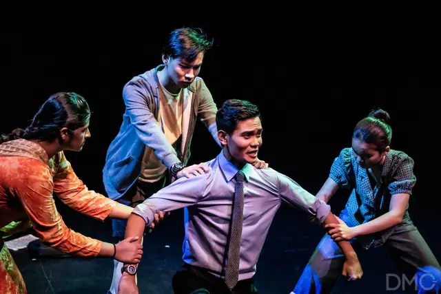
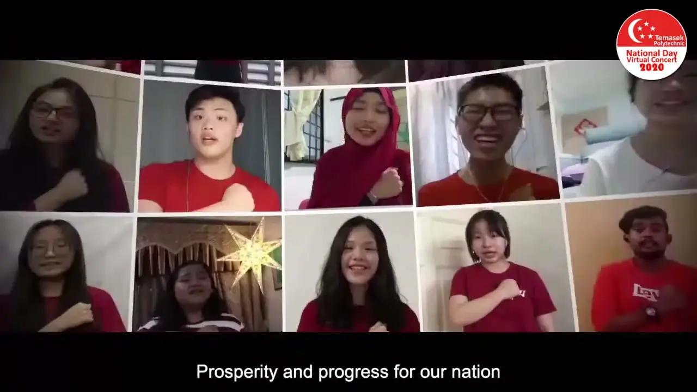
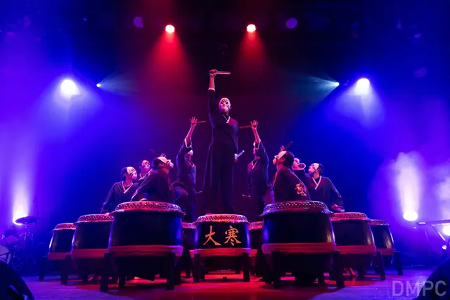
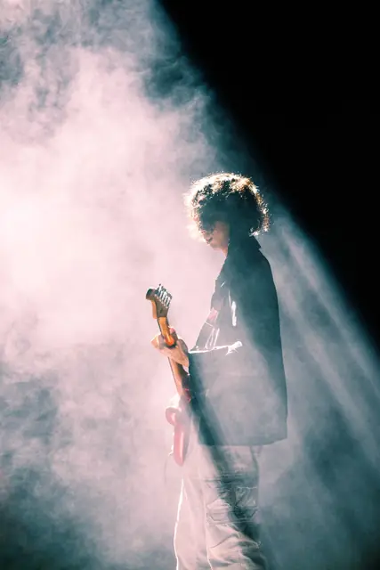
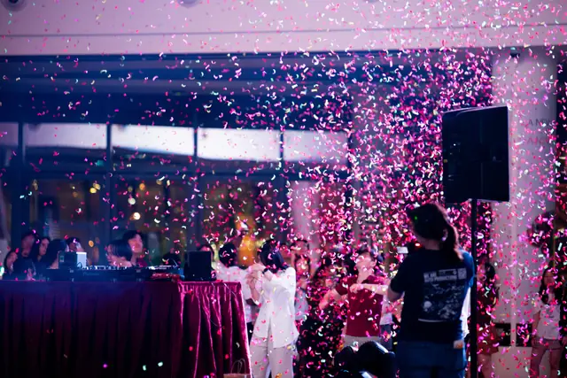

From the lighting desk to running the show.
Seven years of live production in five acts, from lighting student shows at Temasek Polytechnic in 2019 to organising a 250-student night at SUTD in 2026.
- Driven Showrunner
- I plan the rig, program and call the cues, and get the crew through the night, in a black box or a sports hall.
- Team Player
- Vice-president of TP's 100-member production club in 2020; organiser of Fresh-No-More! in 2026.
- Creative-tech skillsets
- GrandMA & Avolites (lights), Yamaha & Behringer (sound) and livestreaming on the desk, with technical know-how in Python, web technology and AI applications.
-

ILighting directorLearning the Ropes: 2019 -

IIVice-presidentThrough the Screen: 2020–21 -

IIILighting directorBack in the Room: 2022 -

IVLighting directorBeyond School: 2025 -

VOrganiserRunning the Show: 2026 · Fresh-No-More!
Lighting director in 2019, vice-president of DMPC in 2020, organiser in 2026.
Credits by role
Curtain call
If you're putting on a show and need someone to light it, run it or organise it, email me.